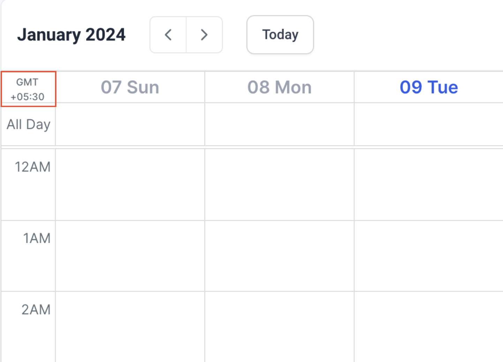
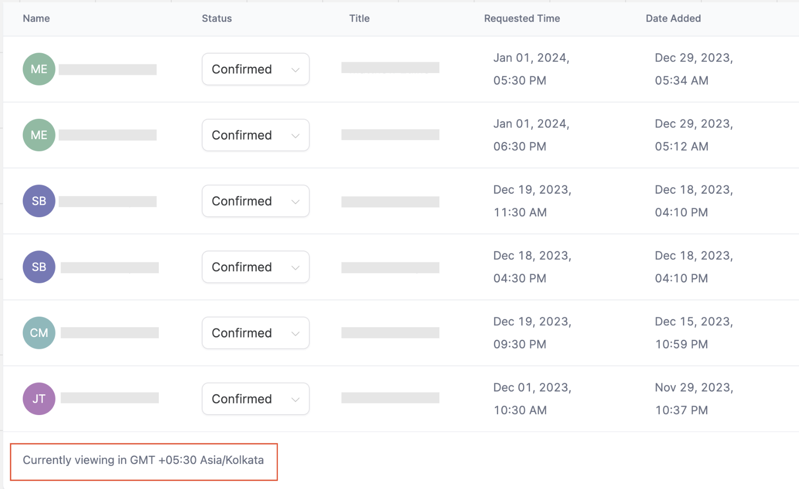
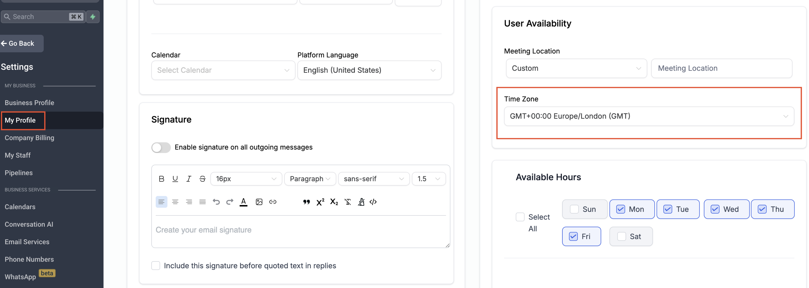
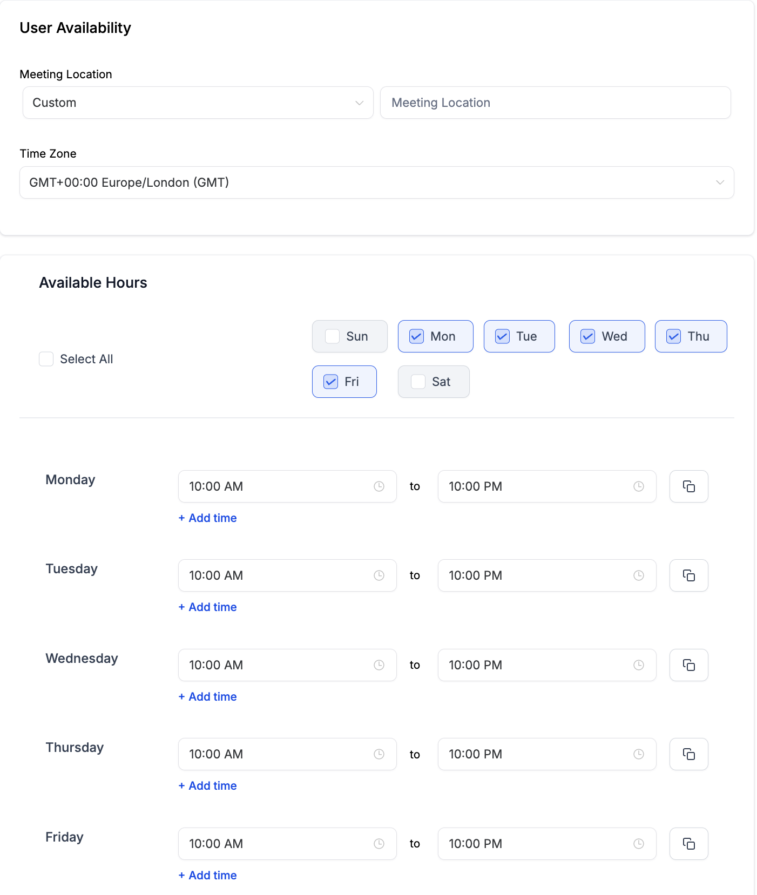

In This Article
How it Works?
Now, you can effortlessly view your calendar, appointments and confirmation emails in your default user timezone, providing a more convenient and efficient experience for users across different locations.
Imagine your business is in New York, USA (Eastern Standard Time - EST). User A is in Paris, France (Central European Time - CET), and User B is in California, USA (Pacific Standard Time - PST).
With the default user timezone set to CET for User A, they see all appointments in Central European Time, while User B views appointments in PST. This eliminates the need for manual conversion, letting users check appointments directly in their own timezone.
Note: On the Calendar View and Appointment List, you can now identify the timezone you are currently viewing in.
Calendar View

Appointment List

Setting Your Timezone
To set your timezone:
- Navigate to Settings > My Profile.
- Scroll to User Availability and set your timezone.

Ensuring Accurate Availability:
If Your User Timezone is Set to Your Actual Location:
- Simply input your usual availability, e.g., 9 am to 5 pm.
If Your User Timezone is Set to a Different Location (for Viewing Appointments):
- Manually adjust your availability to match the selected timezone. For example, if your current location is in the UK (GMT +00:00), but you want to operate in New York (GMT -05:00), ensure to adjust your availability accordingly to align with the New York timezone.

Note: These changes are applicable only in the Calendar Module: Calendar View, Appointment List, Confirmation Emails. To be implemented for: Appointments under Contacts, Conversations and Opportunities
FAQ
Q: I want to see appointments in the business timezone. What do I do?
A: To view appointments in the business timezone, set your user timezone to match the business timezone. For example, User A can set their timezone as EST to view appointments in the New York timezone.